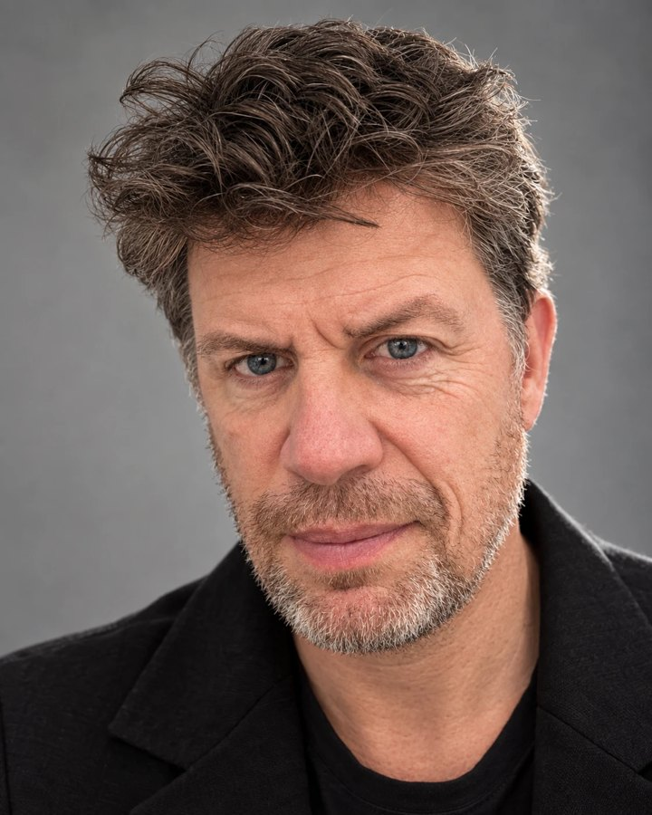
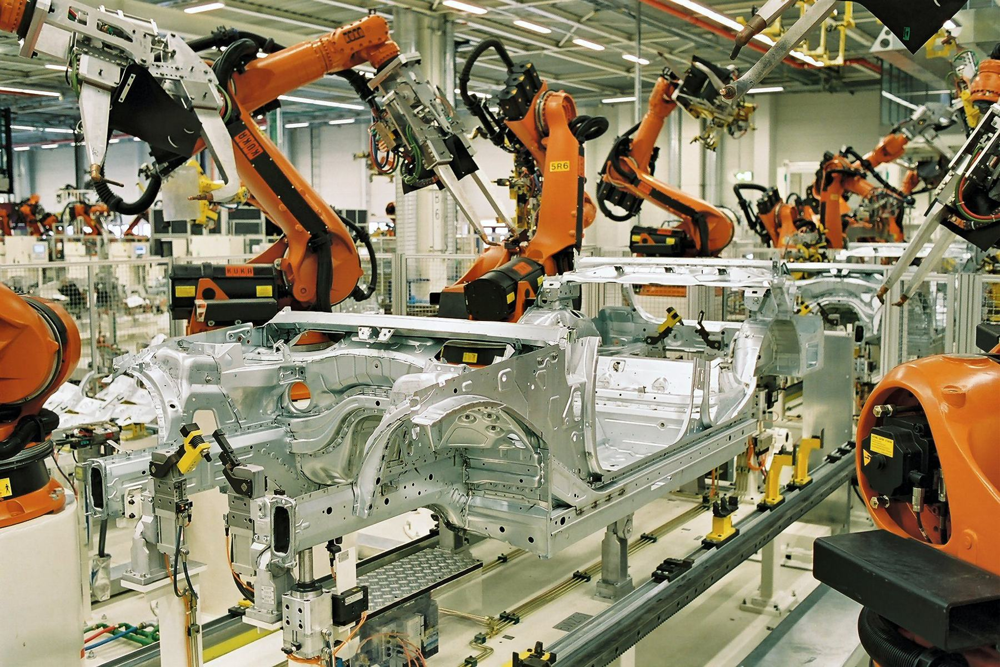
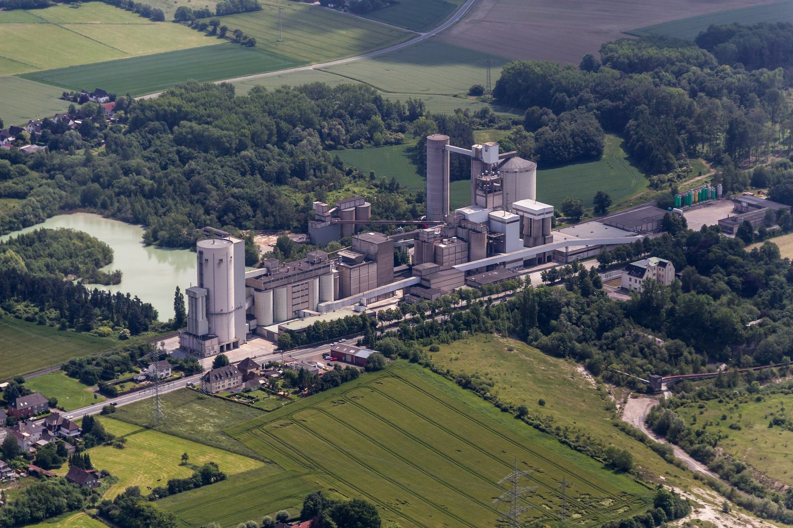

25 years in the DACH market. 10 closing multi-year subscription deals with Tier 1 manufacturers, 14 before that running supply chain delivery and consulting teams. Since 2023 I also build with AI, on my own server, in my own time.

Jean-Charles DasFact sheet · 2026Most account executives fight over the percentage. I win on the structure of the agreement: who pays what, when, against which commitment. Price is the last thing we talk about.
14 years in delivery and consulting before I carried a quota. I know which 2 or 3 people in a Konzern have to say yes before procurement opens the file, what each of them needs to be true, and I write to them in German.
The largest FY25 deal needed 20+ colleagues across services, legal, pricing, presales and partners aligned on one deadline. None of them report to me. It closed in Q4.
| 2023 · today | Blue YonderSupply chain SaaS, formerly JDA | Senior Account Executive, EMEA discrete manufacturing. DACH book of 5 Tier 1 industrial groups, on-premise to SaaS conversions, renewals and expansion. | FY23 50% · FY24 90% · FY25 239% |
| 2021 · 2023 | BMC SoftwareIT operations software | Product Account Manager, 15 Tier 1 DACH accounts. 15 Tier 1 DACH accounts, 70% licenses and 30% SaaS in the portfolio. | EUR 19M TCV closed |
| 2018 · 2021 | TransporeonLogistics SaaS | Corporate Account Executive, net new logos with EUR 5B+ manufacturers across EMEA, consumption-based pricing. | 200% quota 2020 |
| 2017 · 2018 | GT NexusSupply chain network, Infor | Global Account Manager, 50 named manufacturer accounts, pipeline built from zero. | EUR 2M pipeline |
| 2013 · 2017 | ElemicaChemical and tire supply chain network | Functional Delivery Director (15-person team), then Global Key Account Director. The move from delivery into quota, same company, same accounts. | 110% target 2017 |
| 2009 · 2012 | Esprit EuropeFashion retail | Head of SCM Center of Competence, 8 project managers and consultants, supply chain roadmap for Europe. | EUR 5M+ programmes |
| 2001 · 2009 | Accenture, Toshiba, UPS SCSConsulting and operations | Supply chain consulting, 3PL negotiations, EMEA after-sales operations for Dell, IBM and HP. | 4 countries |
| 1999 · 2001 | CAT GroupRenault vehicle logistics | IT Project Manager, Germany. TMS, EDI onboarding of Volvo and Kawasaki. | First job in Germany |
Names and exact figures are withheld, my customers did not sign up to be on a website. The mechanics are real.


A mini PC in my home office indexes 20 years of my own emails, contracts and scanned documents. A set of agents works on top of it every day. The audience is 1, and he is the most demanding customer I have.
$ docker ps qdrant Up, healthy vector store api Up, healthy search + chat n8n Up workflows $ systemctl list-timers | grep -c jcd 14 scheduled agents $ free -h | head -2 13 GB RAM, 16 threads, 1 mini PC $The whole data centre. Really.
Everything I produce or receive lands in one place.
Watchers pick files up in seconds and make them searchable.
One vector store, hybrid search, never exposed to the internet.
Where the work actually gets done.
Chat over my own archive with cited, clickable sources. 2-stage retrieval: entity extraction first, then dense search filtered on the entities, because conversational questions drown proper nouns in the embedding.
One drop folder for everything. A watcher classifies each file with a small model, renames it to a house convention and files it in the right place in under a minute.
Weekly scan of Greenhouse, Lever, Ashby and SAP job boards for a handful of target companies. Telegram alert only when something relevant opens. It found the posting this page was partly written for.
QBR and business update decks generated from the RAG in my employer's house style, including the workaround for a python-pptx rendering bug that nobody documents.
Sunday evening audit of every listener, port and container on the server against a known list. Anything orphaned gets reported by Telegram.
A public site listing every ranked tennis tournament in the region, scraped weekly from the federation portal and rebuilt as a static page. Used by club families who used to dig through 5 different sites. Shipped, hosted, maintained.
Self-assessed, so the low scores are left in. A profile with no weak spot is a brochure.
I say what I think in the room, in German if needed. Customers and managers get the same version. It costs me a few deals and wins me the ones that matter.
Up at 6, sport before work, deep work before calls, CRM updated the same day. Rules I do not renegotiate with myself, which is why the pipeline is always clean.
239% is not a fluke, it is what happens when I am given a territory and left alone with it. I like being measured.
14 years of delivery before sales. I know what a 7-figure signature commits an IT department to, and I do not sell what I would not have wanted to implement.
The questions a recruiter or a hiring manager asks in the first 30 minutes, answered the way I answer them in the room. Including the uncomfortable ones.